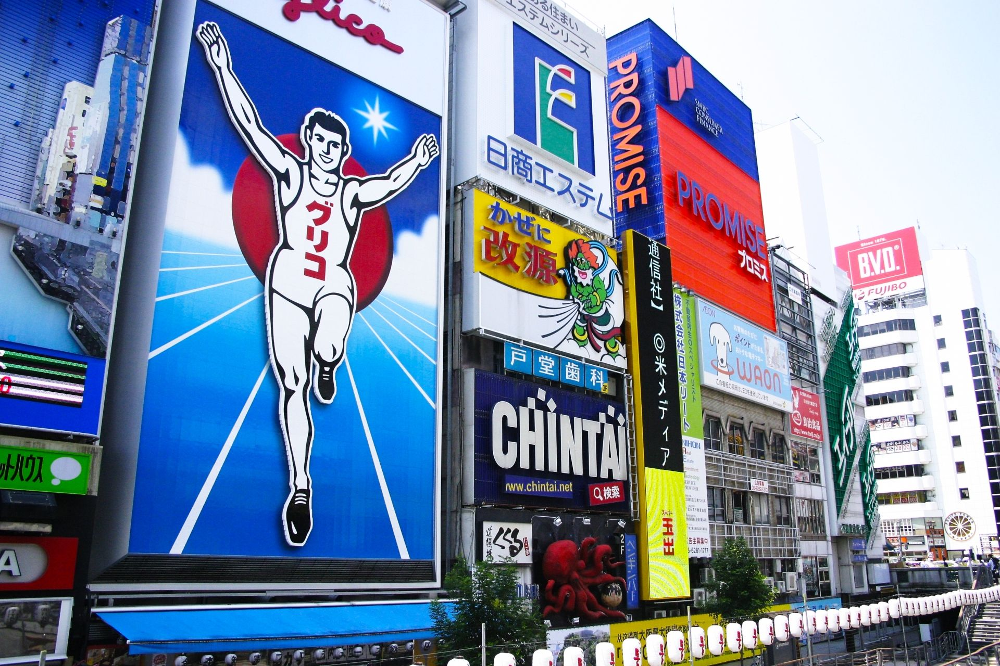

여행 개요
친구들과 함께하는 일본 도쿄와 오사카에서 5일간의 여행 계획. 도쿄 = 랜드마크 방문, 오사카 = 힐링, 일본 전통 체험
상세 일정
- 1월 14일: 나리타 공항 도착 -> 아사쿠사 -> 도쿄 스카이트리
- 1월 15일: 도쿄 디즈니랜드 -> 아키하바라로 이동 -> 근처 호텔 숙박
- 1월 16일: 시부야 -> 도쿄타워(사람 너무 많으면 패스) -> 츠키지 시장 호르몬동 먹기(백종원 추천 맛집)
- 1월 17일: 오사카 이동 -> 도톤보리 구경 -> 저녁 식사(타다키?)
- 1월 18일: 오사카성 방문 -> 쇼핑 옷 적당히, 기념품 -> 귀국
추천 장소 및 정보
맛집
- 츠키지 스시
- 이치란 라멘
- 오사카의 쿠시카츠 전문점
랜드마크
- 도쿄타워
- 유니버설 스튜디오 재팬
- 오사카 난바
- 도톤보리 글리코상

아키하바라 근처 맥도날드 위치
주소: 맥도날드 아키하바라역앞점(아키하바라 센터 플레이스 빌딩)
기념품
- 도쿄 바나나
- 오사카 타코야키 키트
- 지역 한정 키트캣
여행 유의사항
- 환전은 미리 준비하기.
- 제발 돈 아끼기.
- 일본은 쓰레기통이 적은 나라, 쓰레기 봉투나 쓰레기 처리방법 생각해보기.
- 교통카드(Suica나 Pasmo) 충전을 미리 해두기.
- 한식은 안 챙겨도 됨.
추억의 사진 공간
여행 후 이곳에 사진 업로드
사진 공간